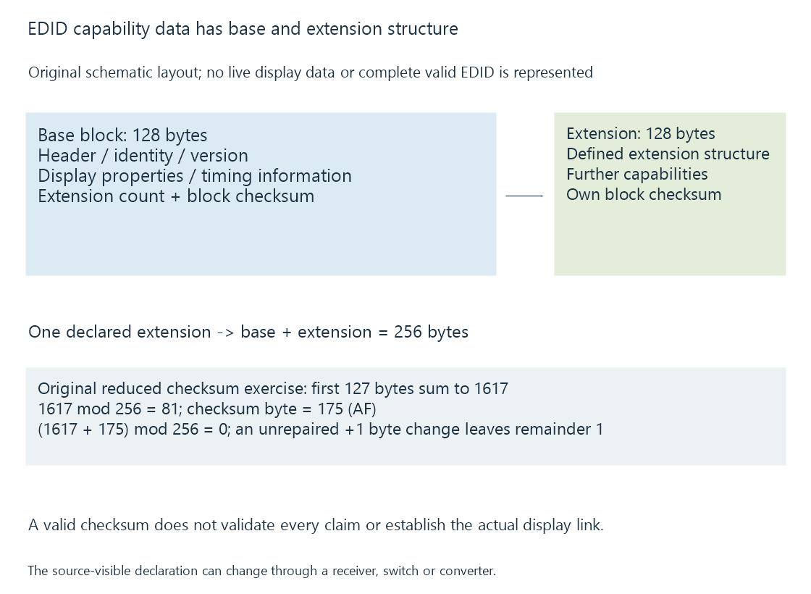

EDID: display capability declarations
EDID is a structured display-capability declaration that a source reads to learn supported timings and related properties, potentially through an intermediate device.
A source needs to know which presentation formats a connected display path says it can accept. EDID, Extended Display Identification Data, provides a structured declaration for that purpose.
It is capability information, not a live picture of the display’s current output or a measurement of every advertised property.
The declaration belongs to the visible connection path
A directly connected TV can expose its EDID to the player. A receiver, switch or converter can instead supply an upstream declaration appropriate to its own role and the downstream display.
The player reads the information it can actually see on that path. Adding an intermediate device can therefore change the available mode list without changing the TV itself.
An EDID also does not supply the player’s output capability. A source can use only combinations implemented by its own output route.
Base data and extension data have defined structure
A conventional EDID base block is 128 bytes. It contains identity/version fields, display characteristics and timing-related information. A count indicates additional 128-byte extension blocks.
Extensions can carry further structures, including CTA-861 capability blocks. A base block with one declared extension consequently describes a 256-byte base-plus-extension arrangement.

The recognizable base header is:
00 FF FF FF FF FF FF 00
Seeing that header alone does not validate the rest of the data. Version rules, field bounds, extensions and their contents still need parsing.
The Linux EDID parser referenced here supplies a version-pinned, public implementation example. Its behavior is evidence of that parser’s checks, not a substitute for all requirements of the VESA standard.
A checksum checks bytes, not claims
The EDID block checksum condition makes the sum of its 128 bytes equal zero modulo 256.
For an original reduced arithmetic exercise, assume the first 127 bytes sum to 1617:
1617 mod 256 = 81
Checksum byte = (256 − 81) mod 256 = 175 = AF hexadecimal
(1617 + 175) mod 256 = 0
This is a checksum exercise, not a complete valid EDID block or a real device dump.
Changing one earlier byte by one without changing the checksum would make the new remainder one. That can reveal a data-integrity inconsistency.
A checksum that passes does not prove that every capability is physically implemented, that the chosen cable works or that HDR brightness was measured accurately. It establishes a byte-level relationship.
The source chooses from compatible possibilities
Use an original readable capability exercise:
{
"sourceModes": ["1080p60-sdr", "2160p60-sdr", "2160p24-pq"],
"pathDeclaredModes": ["1080p60-sdr", "2160p24-pq"],
"selectedMode": "2160p24-pq"
}
The overlapping modes are the source/path intersection. The selection is one choice within it.
This object is a teaching descriptor, not native EDID syntax or a captured operating-system report. The real mode includes precise timing, sample representation and other requirements hidden by these short labels.
A listed PQ mode also does not say that the current source is actively sending PQ. HDR signaling separates the sink declaration from the output signal.
The active route needs additional evidence
After selecting a mode, the source must establish its actual transport. Link rate, sample format, training and any protected-output requirements remain part of the route.
The screen can then apply its own processing and brightness controls. EDID may contain information relevant to those choices, but it does not become a physical luminance measurement merely by being reported through an API.
For Emby playback, the media’s source resolution and HDR tags are another layer again. The client may scale or map that source into a selected output mode.
A useful report records the media properties, the path-visible declarations and the active output separately.
Connection changes can invalidate an earlier assumption
A hot-plug event, input switch or changed receiver arrangement can make the source re-evaluate the visible display information. A cached mode from an earlier direct connection may not describe the new path.
If a mode disappears after adding a receiver, compare the declarations and supported output arrangements at the changed boundary. If a listed mode produces a black screen, successful declaration parsing has already answered only the first part of the question.
HDMI handshakes develops the later stages and the evidence that separates them.
See Also
- CTA-861 capability blocks
- HDMI handshakes and black screens
- AV receivers in the video path
- Native display resolution